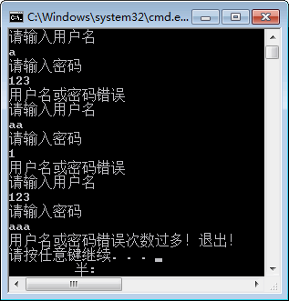

首页 > 编程笔记
C# goto语句
C# goto 语句用于直接在一个程序中转到程序中的标签指定的位置，标签实际上由标识符加上冒号构成。
语法形式如下。
在上面的语句中使用了 goto 语句后，语句的执行顺序发生了变化，即先执行语句块 2，再执行语句块 1。
此外，需要注意的是 goto 语句不能跳转到循环语句中，也不能跳出类的范围。
由于 goto 语句不便于程序的理解，因此 goto 语句并不常用。
【实例】使用 goto 语句判断输入的用户名和密码是否正确，如果错误次数超过3次，则输出“用户名或密码错误次数过多！退出！”。
根据题目要求，假设用户名为 aaa、密码为 123，代码如下。
语法形式如下。
goto Labell;
语句块 1;
Labell
语句块 2;
在上面的语句中使用了 goto 语句后，语句的执行顺序发生了变化，即先执行语句块 2，再执行语句块 1。
此外，需要注意的是 goto 语句不能跳转到循环语句中，也不能跳出类的范围。
由于 goto 语句不便于程序的理解，因此 goto 语句并不常用。
【实例】使用 goto 语句判断输入的用户名和密码是否正确，如果错误次数超过3次，则输出“用户名或密码错误次数过多！退出！”。
根据题目要求，假设用户名为 aaa、密码为 123，代码如下。
class Program
{
static void Main(string[] args)
{
int count = 1;
login:
Console.WriteLine("请输入用户名");
string username = Console.ReadLine();
Console.WriteLine("请输入密码");
string userpwd = Console.ReadLine();
if (username == "aaa" && userpwd == "123")
{
Console.WriteLine("登录成功");
}
else
{
count++;
if (count > 3)
{
Console.WriteLine("用户名或密码错误次数过多！退出！");
}
else
{
Console.WriteLine("用户名或密码错误");
goto login;//返回login标签处重新输入用户名密码
}
}
}
}
执行上面的代码，效果如下图所示。

关注公众号「站长严长生」，在手机上阅读所有教程，随时随地都能学习。内含一款搜索神器，免费下载全网书籍和视频。

微信扫码关注公众号